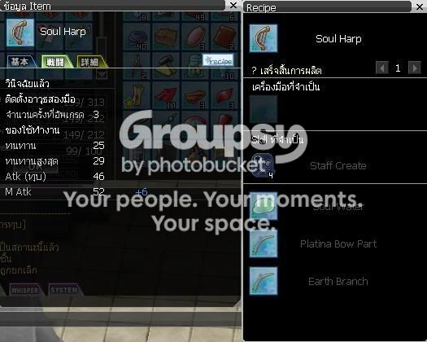

หน้า 1 จากทั้งหมด 1
คิดซะว่าสงสารนะกัน หมดหนทางแล้วอ่ะ T_T

โพสต์แล้ว:
อาทิตย์ 16 มี.ค. 2008 9:30 pmโดย ECO
คับตามหัวกระทู้
ไคใจดีขายพิณ 60 ให้ผมบ้างอ่ะ
มือ 1 เรารับ 300000 หรือ มากกว่า
ถ้ามือ 2 ขอความทนทานซัก 15 นะ รับ 150000 - 200000
ช่วยทีนะคับ
ถ้าเป็นนักดนตรี ไม่มีเครื่องดนตรี
ก็เหมือนกับไม่ใช่นักดนตรี
อย่าหาว่าโพลสบอร์ดผิดนะ เพราะ บอร์ดซื้อขายไม่มีไคขายให้เราเลย
ปล.
อยู่ทาโกะนะ ช่วยเราหน่อยนะกาน
โพสต์แล้ว:
อาทิตย์ 16 มี.ค. 2008 9:41 pmโดย ECO
มีอยู่2อันแต่อยู่โมจิง่ะ-0-
แนะนำให้หาอุปกรณ์ทำเอาถูกกว่าซื้อสำเร็จค่ะ
โพสต์แล้ว:
อาทิตย์ 16 มี.ค. 2008 9:48 pmโดย ECO
kukururun เขียน:มีอยู่2อันแต่อยู่โมจิง่ะ-0-
แนะนำให้หาอุปกรณ์ทำเอาถูกกว่าซื้อสำเร็จค่ะ
ไม่รู้จะหาอุปกรณ์จากไหนมาทำ
รุนะต้องใช้อะไร
แต่หาอุปกรณ์ไม่ได้
Re: คิดซะว่าสงสารนะกัน หมดหนทางแล้วอ่ะ T_T
โพสต์แล้ว:
อาทิตย์ 16 มี.ค. 2008 10:30 pmโดย ECO
xiahjunsu เขียน:คับตามหัวกระทู้
ไคใจดีขายพิณ 60 ให้ผมบ้างอ่ะ
มือ 1 เรารับ 300000 หรือ มากกว่า
ถ้ามือ 2 ขอความทนทานซัก 15 นะ รับ 150000 - 200000
ช่วยทีนะคับ
ถ้าเป็นนักดนตรี ไม่มีเครื่องดนตรี
ก็เหมือนกับไม่ใช่นักดนตรี
อย่าหาว่าโพลสบอร์ดผิดนะ เพราะ บอร์ดซื้อขายไม่มีไคขายให้เราเลย
ปล.
อยู่ทาโกะนะ ช่วยเราหน่อยนะกาน
พิณ60 นี่เหนขายอยู่ตะวันออกอ่ะนะ ทาโก ลองไปหาดู เหนมะเย็น
โพสต์แล้ว:
อาทิตย์ 16 มี.ค. 2008 11:19 pmโดย ECO
มีแต่ กีต้า50 กับ พิณ30 อ่ะ
อยู่ ทาโกะ เหมือนกาน
โพสต์แล้ว:
จันทร์ 17 มี.ค. 2008 2:31 amโดย ECO
ผมทาโก เก็บเอาไว้อยู้ ทน 26/30 ไม่เคยซ่อมอ่ะน่ะ +5ด้วย
หยัมฉา ไม่ก็ Tamakaji
โพสต์แล้ว:
จันทร์ 17 มี.ค. 2008 9:42 amโดย ECO
เราว่าทำเองต้นทุนน่าจะถูกกว่านะ..
แต่อยากซื้อก็ไม่เป็นไร ตามใจละกัน แค่มาเสนอแนวทางให้เฉยๆ ^ ^''

โพสต์แล้ว:
จันทร์ 17 มี.ค. 2008 11:37 amโดย ECO
Pnatbutter เขียน:เราว่าทำเองต้นทุนน่าจะถูกกว่านะ..
แต่อยากซื้อก็ไม่เป็นไร ตามใจละกัน แค่มาเสนอแนวทางให้เฉยๆ ^ ^''
เอ่อ สกิลนี้ให้ NPC ที่ดาวทาว ตรงร้านที่ติดกับร้านขายอาวุธทามให้ได้ปะ
โพสต์แล้ว:
จันทร์ 17 มี.ค. 2008 11:38 amโดย ECO
xiahjunsu เขียน:Pnatbutter เขียน:เราว่าทำเองต้นทุนน่าจะถูกกว่านะ..
แต่อยากซื้อก็ไม่เป็นไร ตามใจละกัน แค่มาเสนอแนวทางให้เฉยๆ ^ ^''
เอ่อ สกิลนี้ให้ NPC ที่ดาวทาว ตรงร้านที่ติดกับร้านขายอาวุธทามให้ได้ปะ
จำได้ว่ามีซักร้านในดาวทาวอ่ะที่ทำ ^ ^''
ลองหาๆดู ร้านที่มีสั่งทำอาวุธอ่ะจ้า
โพสต์แล้ว:
จันทร์ 17 มี.ค. 2008 1:39 pmโดย ECO
ทำเองต้นทุนประมาณเกือบ100เค ถูกกว่าเยอะค่ะ-0- (ณ เซิฟโมจินะ ทาโกะไม่รู้ของเพงกว่ารึเปล่า)
โพสต์แล้ว:
จันทร์ 17 มี.ค. 2008 1:44 pmโดย ECO
kukururun เขียน:ทำเองต้นทุนประมาณเกือบ100เค ถูกกว่าเยอะค่ะ-0- (ณ เซิฟโมจินะ ทาโกะไม่รู้ของเพงกว่ารึเปล่า)
ไปซื้อมาและ 550k แพงโคตรเงินหมดเยย
โพสต์แล้ว:
จันทร์ 17 มี.ค. 2008 1:53 pmโดย ECO
xiahjunsu เขียน:kukururun เขียน:ทำเองต้นทุนประมาณเกือบ100เค ถูกกว่าเยอะค่ะ-0- (ณ เซิฟโมจินะ ทาโกะไม่รู้ของเพงกว่ารึเปล่า)
ไปซื้อมาและ 550k แพงโคตรเงินหมดเยย
ไอเท็มที่ทำก็มีขาดเเต่PlatinaBow Part วันหลังเเนะนำให้ถามเพื่อนๆในริงก่อนจิ จาได้ไม่ต้องเปลืองตังซื้องิ ไหนๆก็ซื้อมาเเละ เฮ้อ
โพสต์แล้ว:
ศุกร์ 28 มี.ค. 2008 4:49 pmโดย ECO
xiahjunsu เขียน:kukururun เขียน:ทำเองต้นทุนประมาณเกือบ100เค ถูกกว่าเยอะค่ะ-0- (ณ เซิฟโมจินะ ทาโกะไม่รู้ของเพงกว่ารึเปล่า)
ไปซื้อมาและ 550k แพงโคตรเงินหมดเยย
โหวววว ของเรา 250k เองนะคะ โมจิ
โพสต์แล้ว:
เสาร์ 29 มี.ค. 2008 5:36 pmโดย ECO
ใช้เวล 30 ดีดก็ได้หนิ ^^ ถูกด้วย แถมทนทาน 20/20 20k เองมั้ง ถ้าทำไม่ผิด ที่ มอร์ก อะ